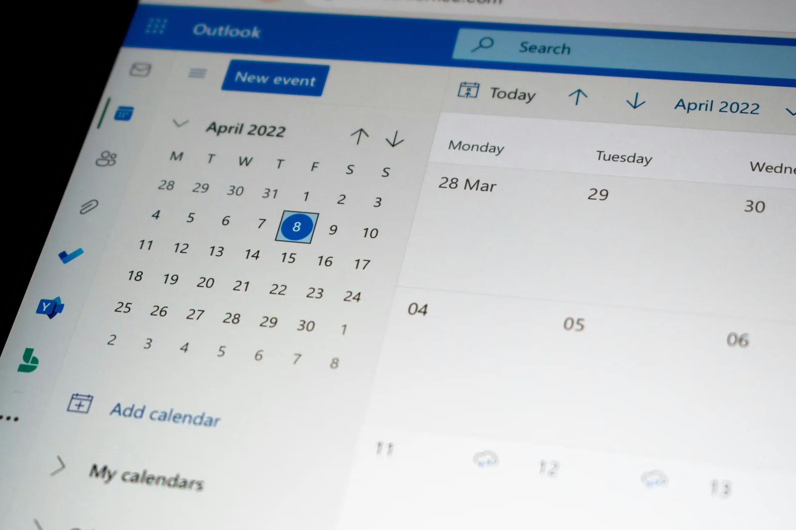

📅
Synchroniser les disponibilités
Le calendrier reste plus cohérent entre plusieurs plateformes. C’est le premier levier pour réduire le risque d’erreur, notamment lorsque le bien est diffusé sur plusieurs canaux.
Un channel manager peut synchroniser vos disponibilités, vos prix et vos réservations entre plusieurs canaux. Mais il ne remplit pas votre logement à lui seul. Pour devenir réellement utile, il doit s’intégrer dans une stratégie plus large : visibilité locale, canal direct, cohérence tarifaire et pilotage de la marge.
Beaucoup de propriétaires cherchent d’abord “le bon outil”. C’est logique : quand un bien est diffusé sur plusieurs plateformes, il faut éviter les calendriers incohérents, les prix mal synchronisés et les doubles réservations.
Mais l’outil ne règle pas tout. Sans positionnement clair, sans visibilité locale, sans canal direct crédible et sans lecture de la marge, le channel manager reste une brique technique. Utile, mais partielle.

Airbnb définit un channel manager comme un outil permettant de centraliser et gérer les données d’un logement, comme les disponibilités et les prix, puis de les distribuer vers différents canaux en ligne.
Le calendrier reste plus cohérent entre plusieurs plateformes. C’est le premier levier pour réduire le risque d’erreur, notamment lorsque le bien est diffusé sur plusieurs canaux.
Les tarifs peuvent être transmis aux canaux connectés, ce qui facilite la cohérence entre OTA, site direct ou moteur de réservation selon l’écosystème choisi.
Un système connecté permet de mieux organiser les flux de réservation, les modifications et les données opérationnelles utiles à la gestion quotidienne.
Sources utiles : Airbnb décrit le channel manager comme un outil de centralisation et de distribution des données du logement, Booking.com rappelle l’importance de la synchronisation pour afficher des informations à jour et éviter les overbookings, et Vrbo explique que connecter un logiciel permet de gérer les annonces depuis un seul système et de distribuer automatiquement les mises à jour.
L’outil devient précieux quand les canaux se multiplient. Mais il ne crée pas à lui seul la demande, la confiance, le SEO local, le canal direct ou la perception premium du bien. Il organise la distribution. Il ne remplace pas la stratégie.
Un channel manager est surtout utile lorsqu’il sert un objectif clair : fiabiliser les données, limiter les erreurs et structurer un dispositif multi-canaux cohérent.
Les informations critiques ne sont plus éparpillées entre plusieurs interfaces sans cohérence globale.
Une meilleure synchronisation limite les incohérences de calendrier, les oublis de mise à jour et les frictions liées à la multi-diffusion.
Le propriétaire visualise mieux où le bien est diffusé, comment les canaux se complètent et quels flux structurent réellement l’activité.
C’est ici que beaucoup de propriétaires se trompent : installer un outil ne suffit pas à construire un dispositif rentable. Le channel manager synchronise. Il ne positionne pas le bien.
Sans pages locales, signaux de confiance et contenu structuré, le bien reste dépendant des plateformes pour capter la demande.
Un channel manager peut connecter un moteur ou un site direct, mais il ne construit pas seul la crédibilité du parcours de réservation.
Photos, immersion, argumentaire, environnement, preuves et expérience perçue restent des leviers de conversion à part entière.
Un outil de distribution prend plus de valeur lorsqu’il ne sert pas uniquement les OTA. Il peut aussi participer à un écosystème plus équilibré : plateformes, site propriétaire, moteur de réservation et signaux Google.
Les plateformes restent utiles pour générer de la demande, surtout au lancement ou sur des périodes de forte concurrence.
Le site ou la page directe permet de mieux maîtriser la présentation, la relation voyageur, la cohérence du prix et la marge conservée.
Google indique que les locations de vacances peuvent apparaître via des free booking links, avec renvoi vers le site direct et sans frais Google sur les réservations générées.
LocPilot intervient dans un cadre de conseil, de visibilité locale, de structuration digitale, de configuration d’outils et de prestation de services. Le propriétaire reste seul décisionnaire et responsable de ses annonces, prix, réservations, contrats, encaissements et obligations réglementaires.
Identifier les outils utiles selon le type de bien, le nombre de canaux, la localité, les objectifs de marge et le niveau de maturité digitale.
Structurer les paramètres, les connexions, les canaux et les règles de diffusion sans créer une usine à gaz difficile à piloter.
Relier la technique à une lecture business : dépendance OTA, potentiel direct, visibilité locale et qualité du parcours voyageur.
L’outil technique devient beaucoup plus pertinent lorsqu’il s’articule avec une stratégie de réservation directe, de visibilité locale et de pilotage commercial.
Comprendre comment un canal direct complémentaire réduit la dépendance aux intermédiaires.
Lire le guideVoir comment la visibilité locale soutient la réservation directe et la valeur perçue du bien.
Lire le guideRevenir aux fondamentaux d’un dispositif plus lisible, plus structuré et moins dépendant d’un seul canal.
Lire le guideIl peut fortement réduire ce risque en synchronisant les disponibilités entre plusieurs canaux. Mais il doit être correctement configuré et rester cohérent avec l’ensemble du dispositif.
Non. Il organise la distribution, mais il ne remplace ni le SEO local, ni la qualité des contenus, ni le positionnement commercial, ni le développement du canal direct.
Cela dépend du nombre de canaux utilisés, de la fréquence des réservations, du niveau de risque d’erreur et de l’ambition commerciale. Avec un seul bien, l’outil peut être utile, mais il doit rester proportionné.
Non. Il sert à connecter, organiser et synchroniser plusieurs canaux. Il ne remplace pas les plateformes : il aide à mieux les piloter dans un écosystème plus large.
Non. LocPilot intervient dans un cadre de conseil, de structuration digitale et de configuration d’outils. Le propriétaire reste responsable de ses réservations, contrats, annonces, prix et encaissements.
Faisons un premier point sur vos canaux actuels, vos risques de synchronisation, votre dépendance aux OTA et les briques les plus utiles à clarifier pour construire un dispositif plus cohérent.